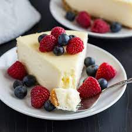

Cheesecake

Description
This creamy dessert has always been a huge hit in my family so it was only
right that I found the perfect recipe for me and mastered it. This will
work well with any topping of your choice regardless if you make your own, or just use
a store bought canned fruit. It will a produce a cheesecake that you may think
looks small, but the slices are thick and delicious!
Ingredients
Graham Cracker Crust
- 1 1/2 cups graham cracker crumbs
- 2 tablespoons sugar
- 1 tablespoon brown sugar
- 7 tablespoons melted butter
Cheesecake
- 32 oz cream cheese softened to room
- 1 cup sugar
- 2/3 cups sour cream
- 1 1/2 teaspoon vanilla extract
- 1/8 teaspoon salt
- 4 large eggs room temp, lightly beaten
Steps
Crust prep
- Preheat oven to 325F
- Prepare crust first by mixing all listed ingredients
- Add melted butter to crust mix and use fork to combine well
- Pour crumbs into 9" Springform pan and press firmly into bottom & sides
Cheesecake
- In large bowl add cream cheese and stir until smooth & creamy don't overbeat
- Add sugar and stir again until creamy
- Add sour cream, vanilla extract, and salt and stir. Pause to scrape sides
- Mixer on low, gradually add lightly beaten eggs, one at a time until each is incorporated
- Use spatula to make sure all mix is well incorporated
- Pour mix into prepared pan with crust, place on cookie sheet to insure against leaks
- Transer to center rack and bake on 325F for about 75 minutes
- Remove and allow cool for 10 minutes. Once 10 minutes have passed, use knife to gently loosen crust from pan
- Allow to cool for another 1-2 hours until near room temperature before transferring to refrigerator to cool overnight